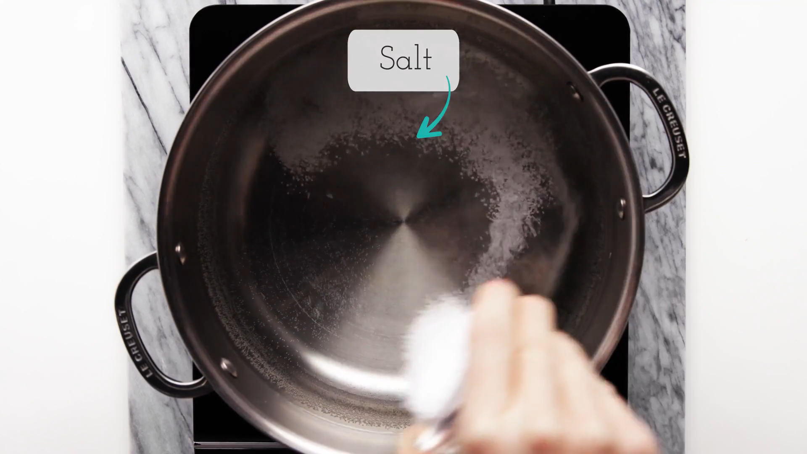
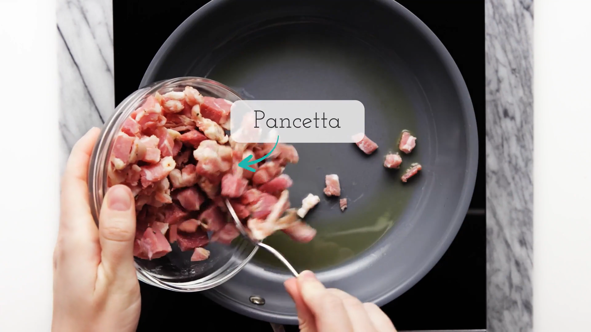
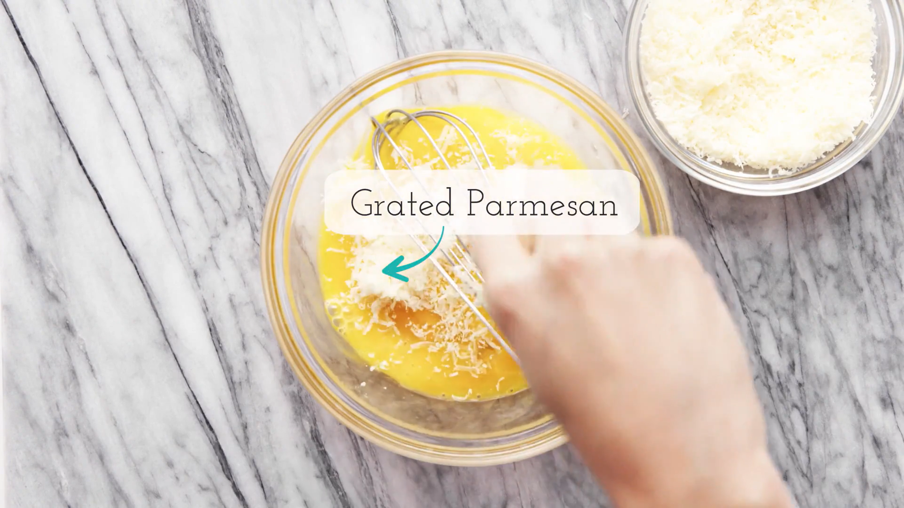
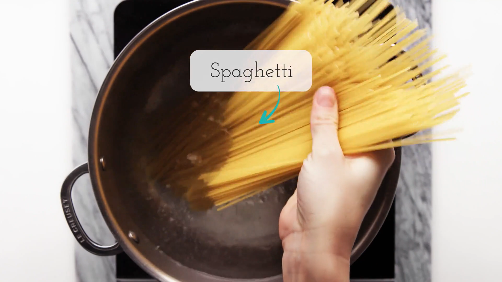
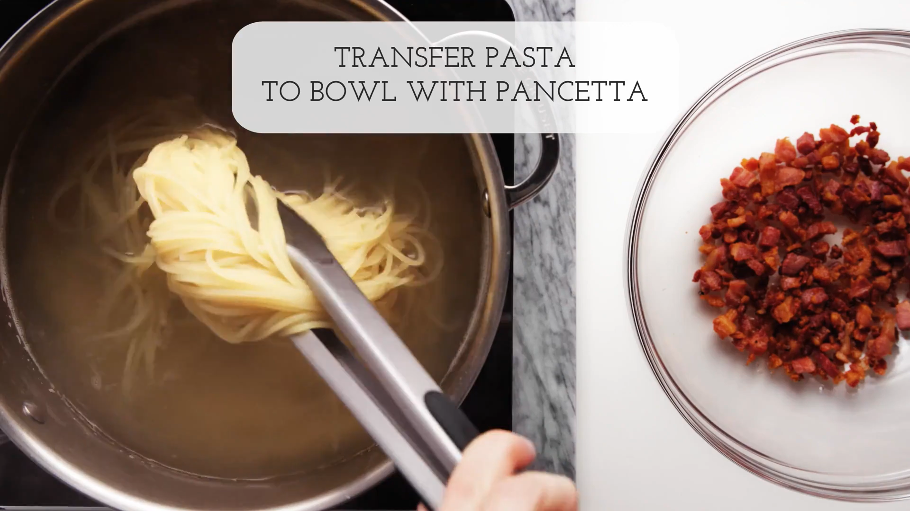

From start to finish, this indulgent spaghetti carbonara recipe takes just 30 minutes to make.
SERVINGS: 4 to 6 servings
PREP TIME: 10 minsCOOK TIME: 20 minsTOTAL TIME: 30 mins
Ingredients
1 pound spaghetti (or bucatini or fettuccine)
1/2 pound pancetta or thick cut bacon, diced
1 cup grated Parmesan or pecorino cheese
3 to 4 whole eggs
1 tablespoon extra virgin olive oil or unsalted butter
1 to 2 garlic cloves, minced, about 1 teaspoon (optional)
Kosher salt and freshly ground black pepper to taste
Pasta Carbonara
The silky carbonara sauce is created when the beaten eggs are tossed with the hot pasta and a little fat from the pancetta or bacon.
Method
Heat the pasta water
Put a large pot of salted water on to boil (1 tablespoon salt for every 2 quarts of water.)

Sauté the pancetta or bacon and garlic
While the water is coming to a boil, heat the olive oil or butter in a large sauté pan over medium heat. Add the bacon or pancetta and cook slowly until crispy.
Add the garlic (if using) and cook another minute, then turn off the heat and put the pancetta and garlic into a large bowl.

Beat the eggs and half of the cheese
In a small bowl, beat the eggs and mix in about half of the cheese.

Cook the pasta
Once the water has reached a rolling boil, add the dry pasta, and cook, uncovered, at a rolling boil.

Toss the pasta with pancetta or bacon
When the pasta is al dente (still a little firm, not mushy), use tongs move it to the bowl with the bacon and garlic. Let it be dripping wet. Reserve some of the pasta water.
Move the pasta from the pot to the bowl quickly, as you want the pasta to be hot. It's the heat of the pasta that will heat the eggs sufficiently to create a creamy sauce.
Toss everything to combine, allowing the pasta to cool just enough so that it doesn't make the eggs curdle when you mix them in. (That's the tricky part.)

Add the beaten egg mixture
Add the beaten eggs with cheese and toss quickly to combine once more. Add salt to taste. Add some pasta water back to the pasta to keep it from drying out.
Serve at once with the rest of the parmesan and freshly ground black pepper. If you want, sprinkle with a little fresh chopped parsley.